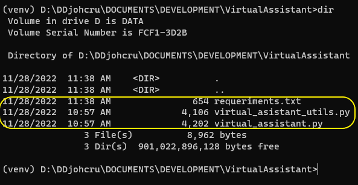

Instalación del Asistente Virtual
La instalación del asistente virtual es muy sencilla, una vez cumplidos los requerimientos. Las instrucciones que siguen están descritas para el sistema operativo Windows, pero no difieren mucho para adaptarlas a otros sistemas operativos como Linux o MacOS.
Preparación inicial
Lo primero que se debe hacer es crea un directorio en la ubicación deseada en donde se quiere instalar el asistente virtual e ingresar a él.
En este caso se creará la carpeta VirtualAssistant en donde se alojará todo el programa y sus dependencias.
Enseguida, se debe descargar, en la carpeta recien creada, los dos archivos de ejecución del programa llamados virtual_asistant_utils.py y virtual_asistant.py y el archivo de dependencias llamado requeriments.txt
El directorio debe quedar de la siguiente manera:
Creando el entorno virtual
Para mejorar la instalación y evitar problemas con librerías previamente instaladas en el sistema, se va a trabajar usando un entorno virtual de Python, que en resumidas cuentas, genera una caja de arena en donde se alojará las librerías que se instalará.
Para esto se instalará y usará la librería virtualenv:
pip install virtualenv
virtualenv venv
venv\Scripts\activate
El “prompt” del sistema deberá aparecer con (venv) al comienzo, tal como lo muestra la imagen anterior.
Instalando las librerías principales
El asistente tiene dependencia de las siguiente librerías principales, las cuales a su vez, dependen de otras. Las librerías principales se encargan de instalar sus dependencias de manera automática por lo que no debe preocuparnos: Para instalarlas se ejecuta:
pip install -r requirements.txt
La instalación debería terminar sin errores como se muestra en la imagen arriba.
Ahora puede configurar los dispositivos ocn los que trabajará el asistente virtual, o ejecutar el asistente siguiendo los pasos descritos en el manual de usuario